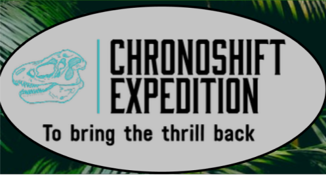

The first website I created this year was a mock tourist website, called “Chronoshift.” This website was made mainly with HTML and CSS. We used the Figma program to design the wireframe of the website, and then made the website itself. The pages included information about the false website, the workers, goals, and contact information. The instructions said we needed a Home Page, an About Us page, an Expeditions page, a Rules page, and a Book Now page. The page needed some images, and colors for the website. I liked the look of my website at first, as the colors and the style really fit the story of the mock website, though I think the website was too messed up than what I wanted from the website, and I really wished I did better with the CSS. I also hate how I constantly didn’t know what to do or how to do HTML. I constantly used Collaboration and Communication, as Veer did a good job to figure out how to do coding. It sucks that the coding is a lot more time consuming to understand than just doing the darn thing, though my persistence as to not give up and learn how to do it is what kept me going though the project.
The second website I created this year was a collaborative website with some of my fellow students. We used the Figma program to design the website’s wireframe, then worked on the website itself. The pages included a Home Page, an information page with sites that can be traveled to, an about page, a discover page, and a visit page. I really got better at coding with HTML, and got a better understanding with CSS. I mainly worked with my page only, as requested by my coworkers, then copy-pasted the page's code to the other pages. My coworkers then edited the pages so that they could make it similar to their countries. I liked the website in the end. While It wasn’t what I had intended to be in the end, I still liked how it turned out. I still think that I should have taken some time to figure some stuff out, so I should have worked on it at home. I’m glad that I worked with the coworkers I got in with, as it was easy to work with them. I pushed hard for Persistence, and really pushed myself hard because of how easy it was to understand the code. I’m glad that I could understand the code and that I could understand how to work with teammates. I think I need to work with timing and asking other teams how they got around similar problems.
The third website I created this year is an Interactive Storyline, a project that I worked with another student, Brock Dunning. We used the Lucidchart program to design the paths you could take with the website-game. Each choice could bring you to a different path, and you won't be guaranteed to get the same ending that a different path could take you to. I learned a lot of how to do the coding of the code with the teachings of Mr. Fast, but also from how others took on similar problems in the code. I was able to get lots of the work done, and could finish it quickly and efficiently. I also learned how to quickly make code that could change text immediately. I was successful in understanding how others addressed similar problems I faced, and I’m most proud of figuring out how to address the problem with my own solution (inspired by other code). One of the challenges I faced was getting it to work sometimes, as the process of just understanding the right piece of code to use in a situation that was appropriate and what was an inappropriate time was difficult to figure out. The CART Habits of mind I exercised a lot in was Persistence, as well as Creativity in dealing with the problems of the code. I feel like I should have focused on Collaboration, as Brock and I agreed that I could work on the code early while he took care of other issues, like sending our still-working example code to Mr. Fast.

My Fourth, and last, website I worked on is this website, my Web Portfolio to show off how far I’ve come. I used the program Figma to make a wireframe of what the website would look like, then made the website proper. The pages included a home page, a portfolio with Writing and Programming examples, an about me page with my hobbies, a contact page with all ways to contact me, and my 4 year plan. The website was to be the last website I did in CART this year, and I made sure that I worked hardest on this specific website to get it done. As the culmination of everything I have learned, It pays to make the website look its best as your digital portfolio, as not only is it to show how good you are to others but to prove to yourself that you are good at coding. The success of finishing my final website was probably the one thing I had on my mind the entire time I was at CART for my last few weeks. The biggest problem of this website is that it’s at least 8 pages, bigger than whatever website I’ve done before. It was a slow, tedious process to get the Javascript right, but once it was done I felt great, and more confident about coding. I used all of the “Habits of Mind” of CART on this project, as all of them would be necessary and needed. I needed to be Persistent in the face of trouble and setbacks, I needed to Collaborate with other students to help find solutions to similar problems, and I needed to Communicate with others to figure out how to do certain things properly.